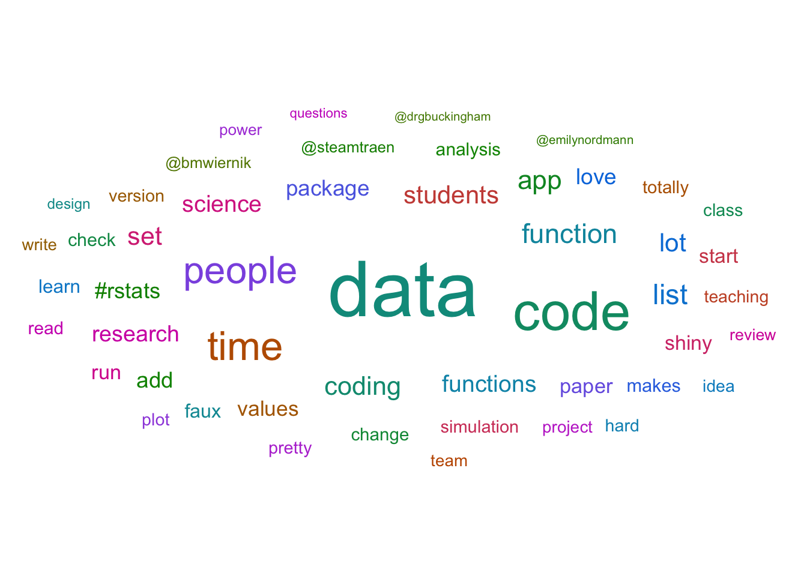

Appendix J — Twitter Data
This appendix takes a problem-based approach to demonstrate how to use tidyverse functions to summarise and visualise twitter data.
J.1 Single Data File
J.1.1 Export Data
You can export your organisations’ twitter data from https://analytics.twitter.com/. Go to the Tweets tab, choose a time period, and export the last month’s data by day (or use the files from the class data).
J.1.2 Import Data
J.1.3 Select Relevant Data
The file contains a bunch of columns about “promoted” tweets that will be blank unless your organisation pays for those. Let’s get rid of them. We can use the select helper starts_with() to get all the columns that start with “promoted” and remove them by prefacing the function with !. Now there should be 20 columns, which we can inspect with glimpse().
Rows: 31
Columns: 20
$ Date <date> 2021-08-01, 2021-08-02, 2021-08-03, 2021-08-04,…
$ `Tweets published` <dbl> 0, 2, 4, 15, 12, 11, 14, 17, 26, 17, 3, 9, 5, 17…
$ impressions <dbl> 1088, 1244, 3974, 22394, 23340, 316989, 694114, …
$ engagements <dbl> 13, 19, 76, 1290, 2051, 26249, 51494, 5988, 2964…
$ `engagement rate` <dbl> 0.01194853, 0.01527331, 0.01912431, 0.05760472, …
$ retweets <dbl> 0, 0, 0, 5, 15, 124, 130, 18, 13, 4, 2, 25, 1, 7…
$ replies <dbl> 0, 2, 5, 15, 16, 122, 123, 21, 52, 21, 4, 11, 9,…
$ likes <dbl> 2, 3, 25, 96, 108, 628, 847, 93, 116, 68, 10, 10…
$ `user profile clicks` <dbl> 1, 9, 10, 56, 36, 379, 550, 98, 78, 31, 17, 104,…
$ `url clicks` <dbl> 2, 0, 0, 45, 97, 10136, 19467, 1937, 681, 324, 1…
$ `hashtag clicks` <dbl> 0, 0, 0, 0, 0, 0, 1, 5, 1, 0, 0, 12, 1, 2, 3, 1,…
$ `detail expands` <dbl> 7, 5, 36, 412, 606, 10348, 21021, 2642, 1441, 79…
$ `permalink clicks` <dbl> 0, 0, 0, 0, 0, 0, 0, 0, 0, 0, 0, 0, 0, 0, 0, 0, …
$ `app opens` <dbl> 0, 0, 0, 0, 0, 0, 0, 0, 0, 0, 0, 0, 0, 0, 0, 0, …
$ `app installs` <dbl> 0, 0, 0, 0, 0, 0, 0, 0, 0, 0, 0, 0, 0, 0, 0, 0, …
$ follows <dbl> 0, 0, 0, 0, 0, 0, 0, 0, 0, 0, 0, 0, 0, 0, 0, 0, …
$ `email tweet` <dbl> 0, 0, 0, 0, 0, 0, 0, 0, 0, 0, 0, 0, 0, 0, 0, 0, …
$ `dial phone` <dbl> 0, 0, 0, 0, 0, 0, 0, 0, 0, 0, 0, 0, 0, 0, 0, 0, …
$ `media views` <dbl> 2, 2, 25, 710, 1187, 4474, 9356, 1176, 582, 334,…
$ `media engagements` <dbl> 1, 0, 0, 661, 1173, 4464, 9353, 1174, 582, 327, …J.1.4 Plot Likes per Day
Now let’s plot likes per day. The scale_x_date() function lets you formats an x-axis with dates.

J.1.5 Plot Multiple Engagements
What if we want to plot likes, retweets, and replies on the same plot? We need to get all of the numbers in the same column and a column that contains the “engagement type” that we can use to determine different line colours. When you have data in different columns that you need to get into the same column, it’s wide and you need to pivot the data longer.
long_tweets <- daily_tweets %>%
select(Date, likes, retweets, replies) %>%
pivot_longer(cols = c(likes, retweets, replies),
names_to = "engage_type",
values_to = "n")
head(long_tweets)| Date | engage_type | n |
|---|---|---|
| 2021-08-01 | likes | 2 |
| 2021-08-01 | retweets | 0 |
| 2021-08-01 | replies | 0 |
| 2021-08-02 | likes | 3 |
| 2021-08-02 | retweets | 0 |
| 2021-08-02 | replies | 2 |
Now we can plot the number of engagements per day by engagement type by making the line colour determined by the value of the engage_type column.
ggplot(long_tweets, aes(x = Date, y = n, colour = engage_type)) +
geom_line() +
scale_x_date(name = "",
date_breaks = "1 day",
date_labels = "%d",
expand = expansion(add = c(.5, .5))) +
scale_y_continuous(name = "Engagements per Day") +
scale_colour_discrete(name = "") +
ggtitle("August 2021") +
theme(legend.position = c(.9, .8),
panel.grid.minor = element_blank())
J.2 Multiple Data Files
Maybe now you want to compare the data from several months. First, get a list of all the files you want to combine. It’s easiest if they’re all in the same directory, although you can use a pattern to select the files you want if they have a systematic naming structure.
Then use map_df() to iterate over the list of file paths, open them with read_csv(), and return a big data frame with all the combined data. Then we can pipe that to the select() function to get rid of the “promoted” columns.
Now you can make a plot of likes per day for all of the months.
ggplot(all_daily_tweets, aes(x = Date, y = likes)) +
geom_line(colour = "dodgerblue") +
scale_y_continuous(name = "Likes per Day") +
scale_x_date(name = "",
date_breaks = "1 month",
date_labels = "%B",
expand = expansion(add = c(.5, .5))) +
ggtitle("Likes 2021")
Notice that we changed the date breaks and labels for the x-axis. %B is the date code for the full month name. See ?strptime for all of the date codes.
J.2.1 Likes by Month
If you want to plot likes by month, first you need a column for the month. Use mutate() to make a new column, using lubridate::month() to extract the month name from the Date column.
Then group by the new month column and calculate the sum of likes. The group_by() function causes all of the subsequent functions to operate inside of groups, until you call ungroup(). In the example below, the sum(likes) function calculates the sum total of the likes column separately for each month.
likes_by_month <- all_daily_tweets %>%
mutate(month = month(Date, label = TRUE)) %>%
group_by(month) %>%
summarise(total_likes = sum(likes)) %>%
ungroup()
likes_by_month| month | total_likes |
|---|---|
| Jan | 1981 |
| Feb | 1603 |
| Mar | 2238 |
| Apr | 2912 |
| May | 2083 |
| Jun | 2303 |
| Jul | 1534 |
| Aug | 3535 |
| Sep | 2480 |
| Oct | 2196 |
| Nov | 2497 |
| Dec | 1679 |
A column plot might make more sense than a line plot for this summary.
ggplot(likes_by_month, aes(x = month, y = total_likes, fill = month)) +
geom_col(color = "black", show.legend = FALSE) +
scale_x_discrete(name = "") +
scale_y_continuous(name = "Total Likes per Month",
breaks = seq(0, 10000, 1000),
labels = paste0(0:10, "K")) +
scale_fill_brewer(palette = "Spectral")Warning in RColorBrewer::brewer.pal(n, pal): n too large, allowed maximum for palette Spectral is 11
Returning the palette you asked for with that many colors
How would you change the code in this section to plot the number of tweets published per week?
Hint: if the lubridate function for the month is month(), what is the function for getting the week likely to be?

J.3 Data by Tweet
You can also download your twitter data by tweet instead of by day. This usually takes a little longer to download. We can use the same pattern to read and combine all of the tweet data files.
The ^ at the start of the pattern means that the file name has to start with this. This means it won’t match the “daily_tweet…” files.
First, let’s open only the first file and see if we need to do anything to it.
If you look at the file in the Viewer, you can set that the Tweet id column is using scientific notation (1.355500e+18) instead of the full 18-digit tweet ID, which gives different IDs the same value. We won’t ever want to add ID numbers,so it’s safe to represent these as characters. Set up the map over all the files with the col_types specified, then get rid of all the promoted columns and add month and hour columns (reading the date from the time column in these data).
J.3.1 Impressions per Tweet
Now we can look at the distribution of impressions per tweet for each month.
ggplot(all_tweets, aes(x = month, y = impressions, fill = month)) +
geom_violin(show.legend = FALSE, alpha = 0.8) +
scale_fill_brewer(palette = "Spectral") +
scale_x_discrete(name = "") +
scale_y_continuous(name = "Impressions per Tweet",
breaks = c(0, 10^(2:7)),
labels = c(0, 10, 100, "1K", "10K", "100K", "1M"),
trans = "pseudo_log") +
ggtitle("Distribution of Twitter Impressions per Tweet in 2021")Warning in RColorBrewer::brewer.pal(n, pal): n too large, allowed maximum for palette Spectral is 11
Returning the palette you asked for with that many colors
The y-axis has been transformed to “pseudo_log” to show very skewed data more clearly (most tweets get a few hundred impressions, but some a few can get thousands). See what the plot looks like if you change the y-axis transformation.
J.3.2 Top Tweet
You can display Lisa’s top tweet for the year.
top_tweet <- all_tweets %>%
slice_max(order_by = likes, n = 1)
glue::glue("[Top tweet]({top_tweet$`Tweet permalink`}) with {top_tweet$likes} likes:
---------------------------
{top_tweet$`Tweet text`}
---------------------------
") %>% cat()Top tweet with 1190 likes:
| Oh, this was fun! You think of the ten least-related nouns possible. I scored in the 94th percentile. |
| https://t.co/FhR4DR38OU |
J.3.3 Word Cloud
Or you can make a word cloud of the top words they tweet about. (You’ll learn how to do this in Section 10.3.4.5).

J.3.4 Tweets by Hour
In order to make a plot of tweets by hour, colouring the data by wherther or not the sun is up, we can join data from a table of sunrise and sunset times by day for Glasgow (or download the table for your region).
The Day column originally read in as a character column, so convert it to a date on import using the col_types argument.
Create a matching Day column for all_tweets, plus an hour column for plotting (the factor structure starts the day at 8:00), and a tweet_time column for comparing to the RiseTime and SetTime columns, which are decimal hours.
Then join the sun table and create a timeofday column that equals “day” if the sun is up and “night” if the sun has set.
Check a few random rows to make sure you did everything correctly.
| time | Day | hour | tweet_time | RiseTime | SetTime | timeofday |
|---|---|---|---|---|---|---|
| 2021-08-31 15:27:00 | 2021-08-31 | 15 | 15.450000 | 5.327 | 19.192 | day |
| 2021-08-05 10:57:00 | 2021-08-05 | 10 | 10.950000 | 4.501 | 20.209 | day |
| 2021-09-13 16:21:00 | 2021-09-13 | 16 | 16.350000 | 5.740 | 18.633 | day |
| 2021-06-30 09:37:00 | 2021-06-30 | 9 | 9.616667 | 3.624 | 21.026 | day |
| 2021-08-27 12:48:00 | 2021-08-27 | 12 | 12.800000 | 5.200 | 19.359 | day |
| 2021-10-16 11:29:00 | 2021-10-16 | 11 | 11.483333 | 6.811 | 17.222 | day |
| 2021-01-10 12:06:00 | 2021-01-10 | 12 | 12.100000 | 8.651 | 16.142 | day |
| 2021-02-14 19:22:00 | 2021-02-14 | 19 | 19.366667 | 7.695 | 17.324 | night |
| 2021-08-28 13:09:00 | 2021-08-28 | 13 | 13.150000 | 5.232 | 19.318 | day |
| 2021-10-04 12:01:00 | 2021-10-04 | 12 | 12.016667 | 6.413 | 17.723 | day |
Plot the hour along the x-axis and set the fill and colour by timeofday. Use scale_*_manual() functions to set custom colours for day and night.
map <- aes(x = hour,
fill = timeofday,
colour = timeofday)
ggplot(sun_tweets, mapping = map) +
geom_bar(show.legend = FALSE) +
labs(x = "",
y = "",
title = "Number of tweets by hour of the day") +
scale_x_discrete(breaks = c(8:23, 0:7)[c(T, F, F, F)],
drop = FALSE) +
scale_y_continuous(expand = c(0, 0, .1, 0)) +
scale_fill_manual(values = c("gold", "midnightblue")) +
scale_colour_manual(values = c("darkgoldenrod1", "black")) +
facet_wrap(~month(time, label = TRUE, abbr = FALSE), nrow = 3) +
theme(strip.background = element_rect(fill = "white",
color = "transparent"),
panel.grid = element_blank())
Go through each line of the plot above and work out what each function and argument does by changing or removing it.